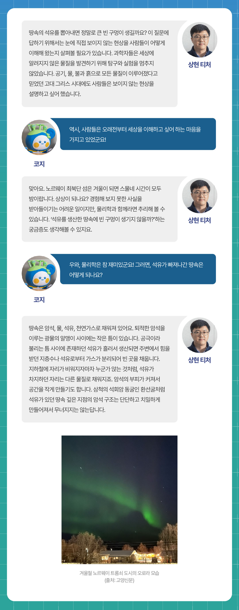
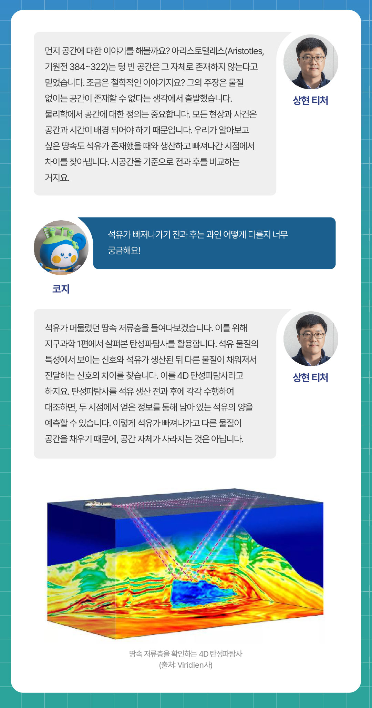
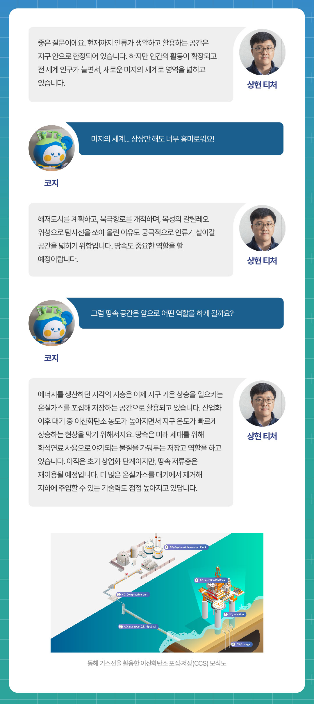
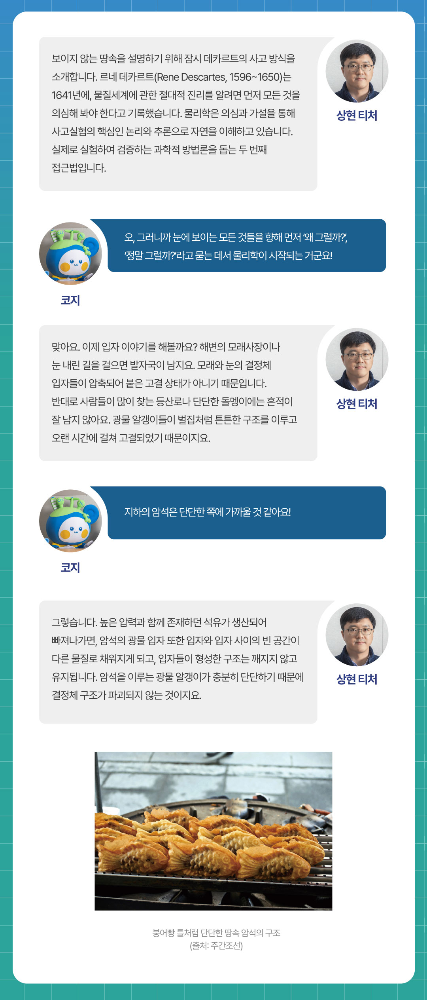
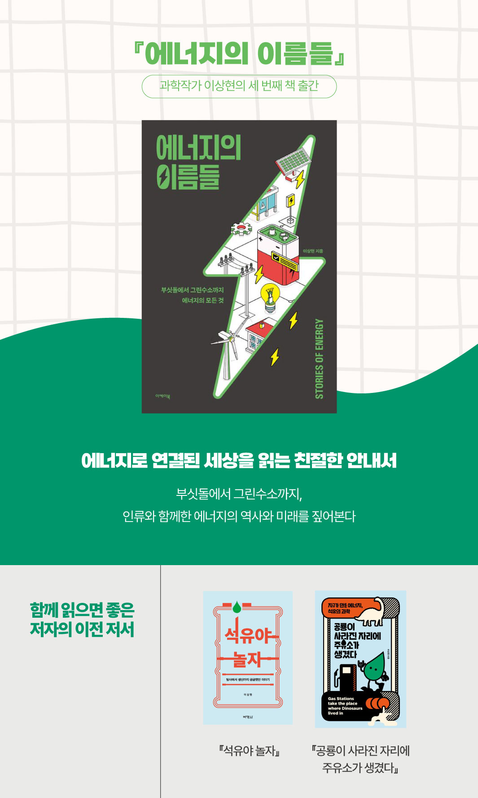

어느덧 2025년 알쓸유잡 시즌2의 마지막 시간입니다. 지난 시간에는 <물리학편 - 석유와 땅속 에너지>를 통해 지구 내부를 지배하는 열과 압력의 세계를 살펴보며, 보이지 않는 힘들이 석유와 가스의 흐름을 결정한다는 사실을 확인했죠. 이번 시간은 그 연장선에서, 석유를 생산한 땅속에서는 어떤 변화가 일어나는지 살펴보려 합니다. 상현 티처와 함께 땅속에서 펼쳐지는 에너지의 흐름을 따라가 볼까요?
Q1. 티처! 땅속에 있던 석유를 다 뽑아내면, 그 자리에는 커다란 ‘빈 구멍’이 생기나요?

Q2. 만약 땅속을 X-ray처럼 볼 수 있다면, 석유가 빠져나간 자리는 어떤 모습일까요?

Q3. 석유가 빠져나간 땅속 공간을 새로운 방식으로 활용할 수도 있을까요?

Q4. 지하의 암석들은 석유가 빠져나가면 서로 다시 붙으려고 할까요, 아니면 틈을 유지하려고 할까요?

Q5. 석유를 뽑아낸 자리에는 나중에 ‘새로운 에너지’가 다시 채워질 수도 있을까요?

상현 티처와 함께 하는 <알쓸유잡 시즌2> 여섯 번째 이야기,
이번 시간에는 석유를 생산한 땅속에서 일어나는 변화를
알아보았습니다. 2025년 한 해 동안 함께해 온 <알쓸유잡
시즌2>, 여러분께는 어떤 시간이었나요?
<알쓸유잡 시즌2>를 통해 석유 에너지의 과학을 차근차근
알아보았는데요. 다소 어렵게 느껴질 수 있는 내용들을 쉽게 풀어내기
위해 노력한 상현 티처의 마음이 여러분께도 전해졌기를 바랍니다.
과학은 자연을 통찰하고, 에너지와 인류를 이어주는 중요한
다리입니다. 새로운 미래 에너지로 도약하는 길에서, 과학이 우리
모두에게 든든한 친구가 되기를 바랍니다.


아래의 카드를 클릭해보세요!
땅속의 석유를 뽑아내면, 그 자리는 어떻게 될까요?
석유가 생산되고 나면, 주변에서 힘을 받던 지층수나 석유로부터 분리된 가스가 그 공간을 채우게 됩니다.
석유가 빠져나간 땅속 공간을 새로운 방식으로 활용할 수 있을까요?
에너지를 생산하던 지층은 이제 온실가스를 저장하는 공간으로 활용되고 있습니다. 기술 발전으로 더 많은 온실가스를 대기에서 제거해 지하에 주입할 수 있게 되고 있답니다.
땅속 암석은 석유가 빠져나가도 왜 쉽게 무너지지 않을까요?
석유가 빠져나가면 암석의 입자와 입자 사이 공간이 다른 물질로 채워지게 되고, 입자들이 형성한 구조는 유지됩니다. 암석을 이루는 광물 알갱이가 매우 단단하기 때문입니다.